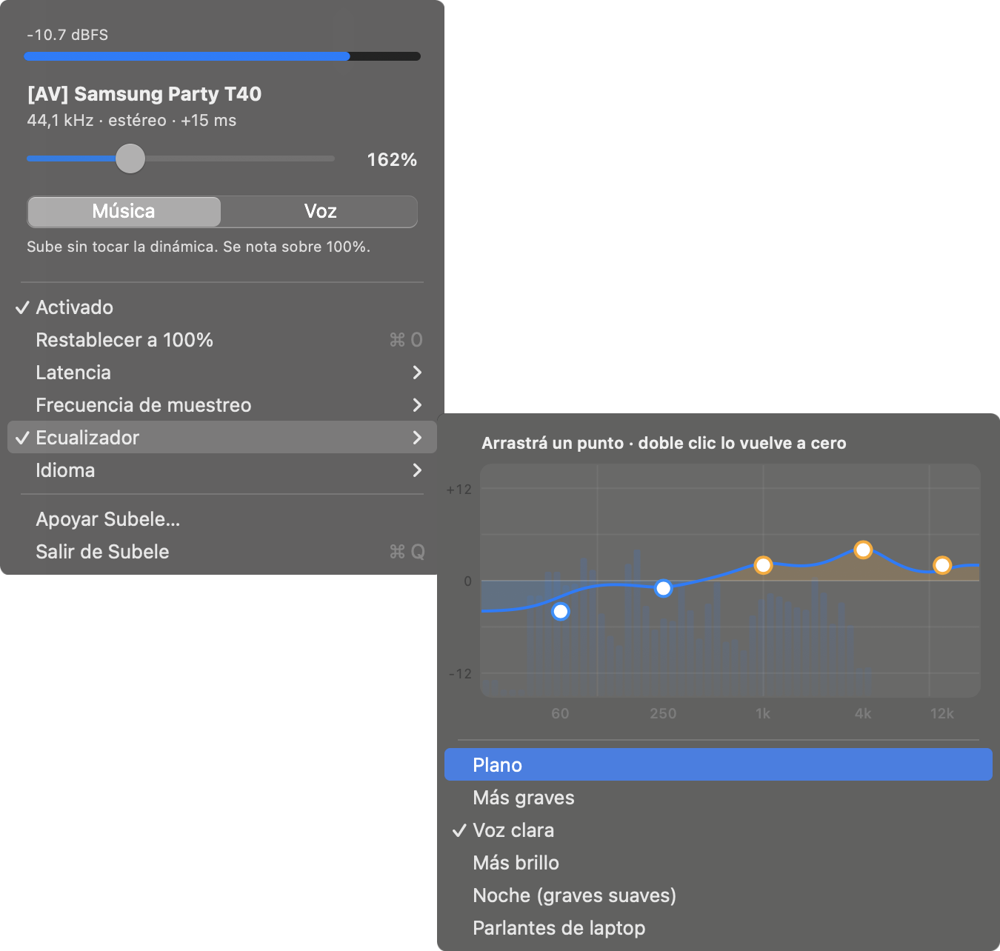

¿Tu Mac está al 100 % y todavía se escucha bajo?
Subele sube el sonido de videos, música y llamadas hasta 400 % sin que suene reventado. No instala drivers, no pide cuenta y es gratis.
macOS 14.2 o posterior · Intel y Apple Silicon · código abierto (MIT)

Un slider de 50 a 400 %. Un limitador baja los picos antes de que lleguen, así el sonido no se rompe al subir.
Música sube parejo y respeta la dinámica. Voz levanta lo que se escucha bajo, ideal para llamadas, podcasts y videos con audio flojo.
Graves, medios y agudos en cinco bandas que se arrastran sobre la curva, con el espectro en vivo y presets como Voz clara o Más graves.
Usa la API de audio de macOS 14.2. No instala un dispositivo virtual ni cambia tu salida. Para desinstalarlo, borras la app.
Hay dos maneras de evitar que el audio amplificado se pase del máximo. Una es recortar o redondear cada pico que se pasa: es simple, pero deforma la onda, y eso es el sonido a lata del «volumen aumentado». La otra es ver el pico unos milisegundos antes y bajar el volumen justo lo necesario. Subele hace lo segundo.
Distorsión armónica total de un seno de 1 kHz con el volumen en 400 %. En azul, un soft limiter por muestra, calculado con la fórmula que publica FineTune en su código; en ámbar, Subele, medido con su procesador real (es un test del repositorio). Es una señal de prueba. Con música la diferencia cambia, y todavía falta medir las apps grabando su salida (por confirmar). La prueba completa está en el repo.
El limitador además mira los picos entre muestras, que son los que el conversor del Mac puede reconstruir por encima del máximo aunque cada muestra esté por debajo.
Las tres suben el volumen y cada una apunta a algo distinto.
| Subele | FineTune | eqMac | |
|---|---|---|---|
| Instala un driver de audio | No | No | Sí |
| Precio | Gratis | Gratis | Gratis, con plan Pro |
| Cómo evita pasarse del máximo | Baja el volumen con anticipación, incluye picos entre muestras | Redondea cada muestra que se pasa | (por confirmar) |
| macOS mínimo | 14.2 Sonoma | 15 Sequoia | (por confirmar) |
| Interfaz en español | Sí | No | (por confirmar) |
| Volumen distinto por app | No | Sí | En el plan Pro |
| Ecualizador | 5 bandas | 10 bandas, perfiles de audífonos | 10 bandas |
| Instalación | .dmg sin notarizar | Homebrew | Instalador con driver |
Si necesitas volumen por app, ruteo a varias salidas o perfiles de audífonos, te conviene FineTune. Subele está hecho para subir todo el sonido del Mac sin que se rompa.
La app está firmada pero no notarizada: notarizar exige una cuenta paga de Apple Developer. Vas a ver «Apple no pudo verificar que esté libre de malware». Para abrirla igual:
Ajustes del Sistema → Privacidad y seguridad, baja hasta el aviso sobre Subele y toca Abrir igualmente. O en la Terminal:
xattr -d com.apple.quarantine "/Applications/Subele.app"En macOS 15 el viejo Control-clic → Abrir ya no alcanza.
Cada versión publica el SHA-256 de sus archivos en SHA256SUMS.txt, en la página de la versión. Para compararlo con el que descargaste:
shasum -a 256 ~/Downloads/Subele.dmgSi prefieres no confiar en ningún binario, puedes compilarla tú. No hace falta Xcode:
git clone https://github.com/carlostapiacl/subele
cd subele
./build-app.shPara subir el volumen tiene que leer el sonido que sale del Mac, procesarlo y devolverlo. Ese permiso es el que macOS usa para eso. El audio no sale de tu Mac. La app no tiene servidor, cuenta ni telemetría, y el código es público.
Sí. Trabaja sobre la salida que tengas elegida en macOS y se rearma sola si la cambias. Con parlantes AirPlay todavía no está probado (por confirmar).
Unos 15 ms con la opción por defecto, medidos desde el propio audio. No se nota en música ni en llamadas. Si lo notas en un video, en el menú Latencia hay una opción de 128 frames, de unos 9 ms.
Muy poca. En un MacBook Pro Intel de 2019, con música sonando, usó cerca de 1 % de CPU. En Apple Silicon debería ser menos (por confirmar).
No. Esas apps instalan su propio driver y se ponen como salida del sistema, y Subele se traba al intentar leerla. Ciérralas antes de abrir Subele.
Ciérralo desde su menú y borra Subele de Aplicaciones. No deja drivers ni nada instalado en el sistema.
Desde macOS 14.2 hay una API pública, AudioHardwareCreateProcessTap, que captura lo que suenan las demás apps sin un driver de por medio. Subele captura ese audio, lo pasa por ganancia, ecualizador, compresor (en modo Voz) y un limitador con 3 ms de anticipación, y lo devuelve al mismo parlante. Tu salida por defecto no cambia.
Todos los detalles, las mediciones y los tests están en el README del repositorio.
Subele es gratis y va a seguir siéndolo. No hay versión paga. Si te sirvió y quieres colaborar, se agradece; si no, úsala igual.